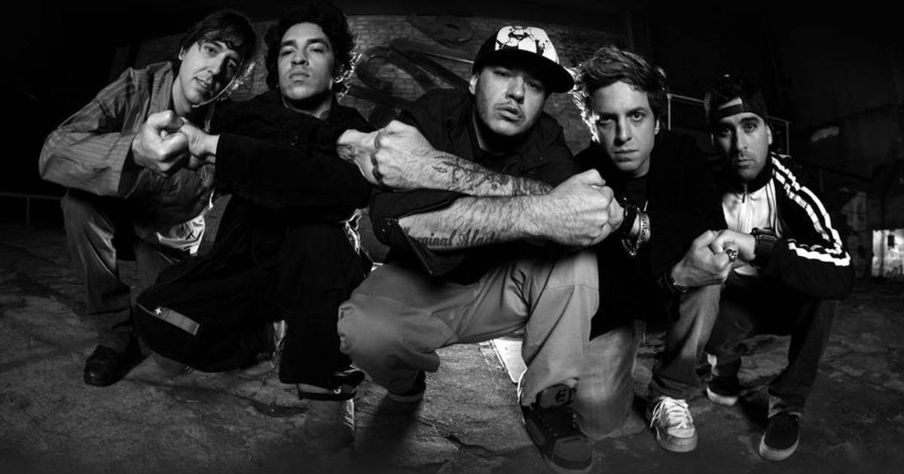
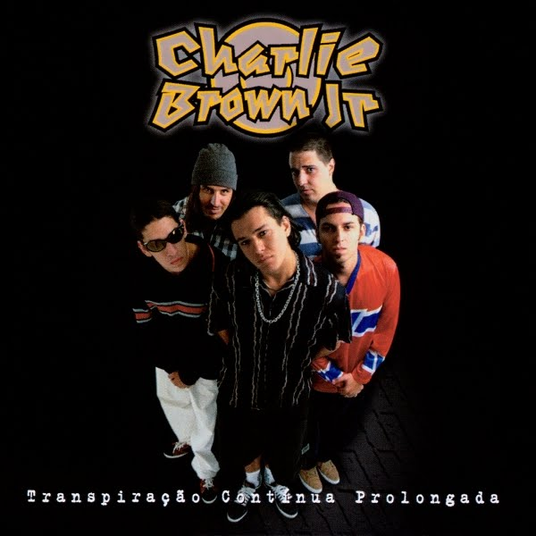
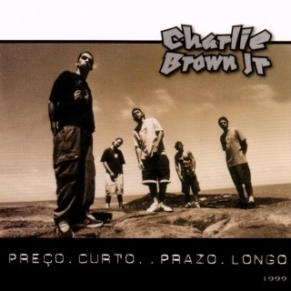
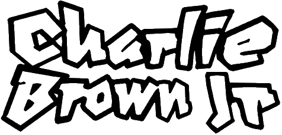

Charlie Brown Jr. é uma banda brasileira de rock formada em 1992 na cidade de Santos, por Chorão (vocal), Champignon (baixo), Marcão Britto (guitarra), Thiago Castanho (guitarra) e Renato Pelado (bateria). Sua discografia contabiliza 11 álbuns de estúdio lançados, 4 álbuns ao vivo e 7 DVDs. Excetuando Chorão, todos os membros da banda são naturais de Santos, uma vez que o vocalista é natural de São Paulo.
O nome Charlie Brown Jr. só foi escolhido pouco tempo após a formação clássica da banda, quando Chorão atropelou uma barraca de água de coco com o desenho do personagem Charlie Brown. O "Jr." foi acrescido, nas palavras de Chorão, "pelo fato de sermos filhos do rock", inspirado por músicos do rock brasileiro à época como Raimundos, O Rapa, Nação Zumbi e Planet Hemp. A sonoridade do grupo tinha influências de grupos como Blink-182, Sublime, Bad Brains, 311, Rage Against the Machine, NOFX e Suicidal Tendencies, misturando hardcore, skate punk, reggae e ska.
Nasce então o álbum Transpiração Contínua Prolongada, produzido por Tadeu Patolla e Rick Bonadio com o selo da Virgin. O título do álbum, segundo a banda, retratava tudo que passaram para chegar onde chegaram. Lançado em 1997, o disco vendeu por volta de 500 mil cópias, e foi bem recebido pelas rádios, que executaram faixas como "O Coro Vai Comê!", "Proibida pra Mim (Grazon)", "Tudo que Ela Gosta de Escutar" e "Quinta-Feira".
A primeira aparição da banda na TV, em rede nacional, ocorreu no dia 24 de junho de 1997, no Programa Livre, do SBT, apresentado por Serginho Groisman.
Em 1999, após a estreia promissora, o grupo voltou com Preço Curto... Prazo Longo, composto por 25 canções inéditas, entre elas "Confisco", "Zóio de Lula", "Te Levar" e "Não Deixe o Mar te Engolir", que sedimentaram a boa recepção da banda e garantiram sua presença nas rádios. De 1999 a 2006, a canção "Te Levar" foi tema do seriado Malhação, da Rede Globo, fazendo com que a banda expusesse seu trabalho às mais diferentes classes sociais. Com sua propagação na mídia, o grupo ganhou vários prêmios e chegou assim, por várias vezes, ao topo de grandes rádios espalhadas pelo país.



">No dia 6 de março de 2013, Chorão foi encontrado morto em seu apartamento, localizado na Zona Oeste de São Paulo. A morte de Chorão foi causada por uma overdose de cocaína.
A banda estava de férias, com seu último show tendo sido em janeiro em Balneário Camboriú, e o próximo show estava marcado para o dia 22 de março, no bairro de Campo Grande, no Rio de Janeiro. "Íamos voltar a tocar no dia 22, mas isso não vai mais acontecer". Champignon declarou que o futuro da banda era incerto.
Poucos dias antes de sua morte, Chorão divulgou o novo single do Charlie Brown Jr., intitulado "Meu Novo Mundo", que seria lançada no próximo álbum do grupo. A canção foi apresentada no dia 28 de fevereiro de 2013, em visita ao estúdio da rádio 89FM, em São Paulo. Na semana da morte de Chorão, o Charlie Brown Jr. dominou a lista de compras eletrônicas no Brasil. No top 10 das músicas mais compradas da semana, a banda apareceu em nove das 10 posições. O único single da lista que não era do grupo correspondia à 5ª posição. Além disso, no dia 14 de março, havia sete discos da banda entre os 200 mais vendidos em uma loja virtual no Brasil. A coletânea De 1997 a 2007 figurou na segunda posição dos álbuns mais vendidos deste dia
